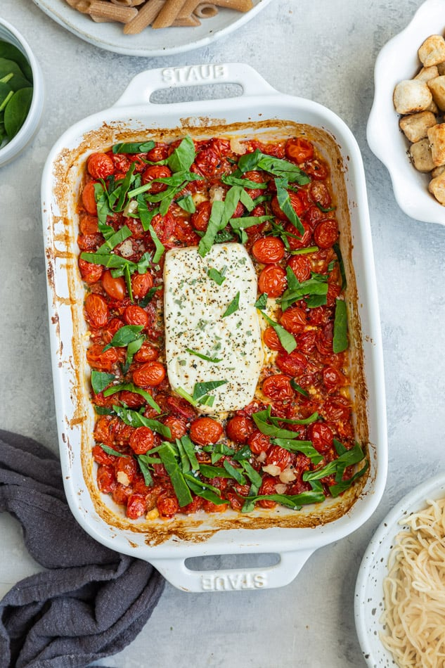

Home
Tomato feta pasta

Description
The dish's preparation is simple: roast a block of feta, a smattering of cherry tomatoes, and a couple of chopped chili's on the same sheet tray.
Once melty and blistered, remove, combine, and toss with freshly cooked spaghetti, or your pasta of choice.
Ingredients
- Cherry tomatoes
- Feta cheese
- Basil
- Garlic
- Pasta
Steps
- Place tomatoes in a baking dish, oil them up, and season with salt and pepper.
- Nestle a block of feta cheese smack dab in the middle of the baking dish.
- bake at 400 degrees F (200 degrees C) for 30 to 35 minutes.
- Add minced garlic and chopped basil, stir to combine all that melty, cheesy goodness, and stir in cooked pasta.
- Serve and enjoy!